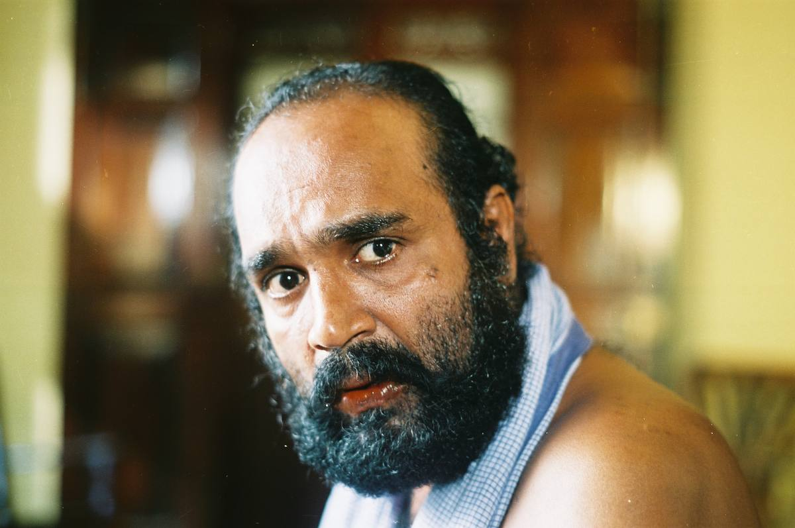

කතාවThe story
The British are cutting a railway line from Colombo up into Kandy. In the villages along the survey, the plan is not merely difficult; it is unthinkable. Hills are not there to be opened.
At the centre of the film stands Pitangane, a Sinhala man of enormous local authority, whose world runs on inherited belief, ritual and the word of elders. Against him runs the line itself, and the engineer who has come to build it — a man with instruments, a gradient and a completion date.
When the engineer falls in love with a village girl, the argument stops being about a railway. It moves indoors, into a household, and the two orders that had been circling each other are forced to share a roof.
The film is Dharmasiri's own adaptation of his novel Bherunda Pakshiya, which won the Sarathchandra Abhinandana award. It was his second feature. Premasiri Khemadasa wrote the score; Dinesh Kumara shot it.
